Core Concepts¶
Inflexible Clusters¶
Problem¶
Let’s start with the problem Netmaker was designed to solve: Inflexible Kubernetes clusters. Here’s what the typical Kubernetes cluster looks like:
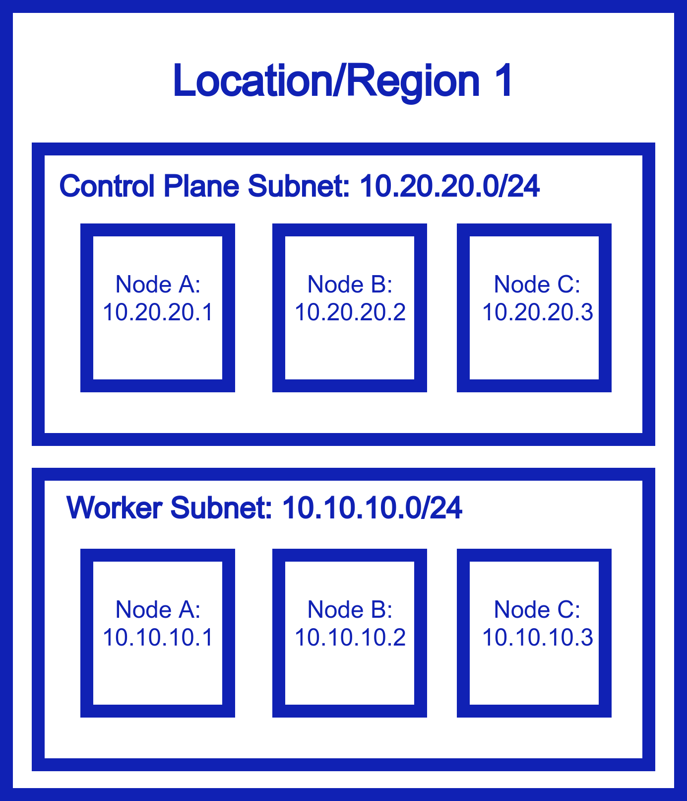{kind=link}
Kubernetes is designed to be flexible and scalable. It’s distributed! So, we should be able to deploy our nodes anywhere, right? Well, turns out, you cant:
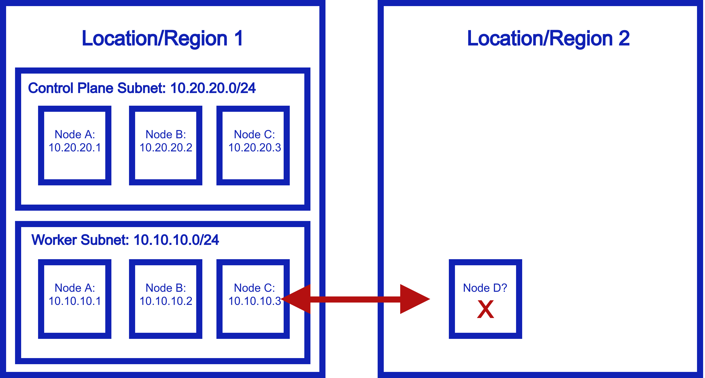{kind=link}
This does not work because worker nodes need to be in the same subnet to talk to each other. They need private addresses to communicate over. Otherwise, traffic doesn’t get through, and they can’t talk to each other.
So, if you want a Kubernets cluster that spans data centers, clouds, edge environments, IoT, or anything else, as it stands, you’re out of luck.
Existing Solutions¶
That’s not to say there aren’t workarounds. The most common solution is “multi-cluster”, that is to say, deploy a cluster per environment, and use a platorm to coordinate apps across these environments. There are many solutions for this, including:
Rancher
Tanzu
Red Hat Advanced Cluster Management
KubeFed
What does this end up looking like?
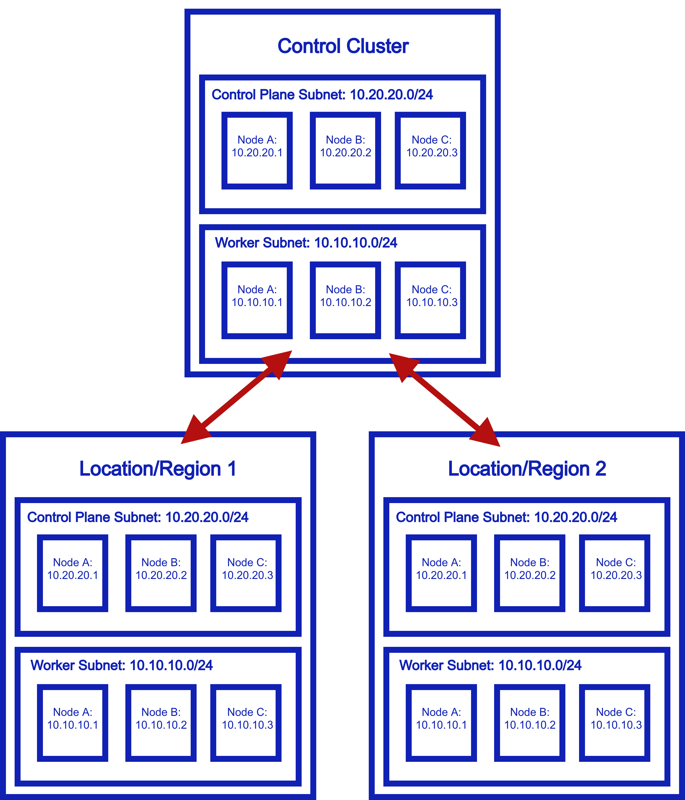{kind=link}
That seems like a lot of extra infrastructure and overhead…and for what? Let’s see the Netmaker approach.
Solution With Netmaker¶
What if instead of replicating clusters and applications, we could just extend our cluster between these environments? Here’s how it looks with Netmaker.
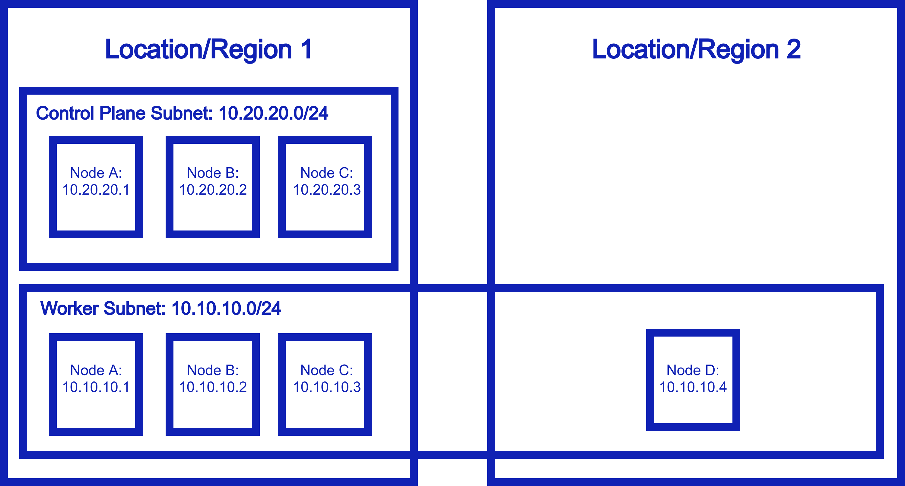{kind=link}
Basically, the worker node subnet is now ephemeral and completely flexible. It can live anywhere which means…your nodes can live anywhere, and still be able to talk to each other directly and securely. You can use Kubernetes just like you did before, but now, it truely is distributed!
Remote Access (outbound)¶
Problem¶
Applications on your cluster need to access non-cluster resources securely. How can you do this?
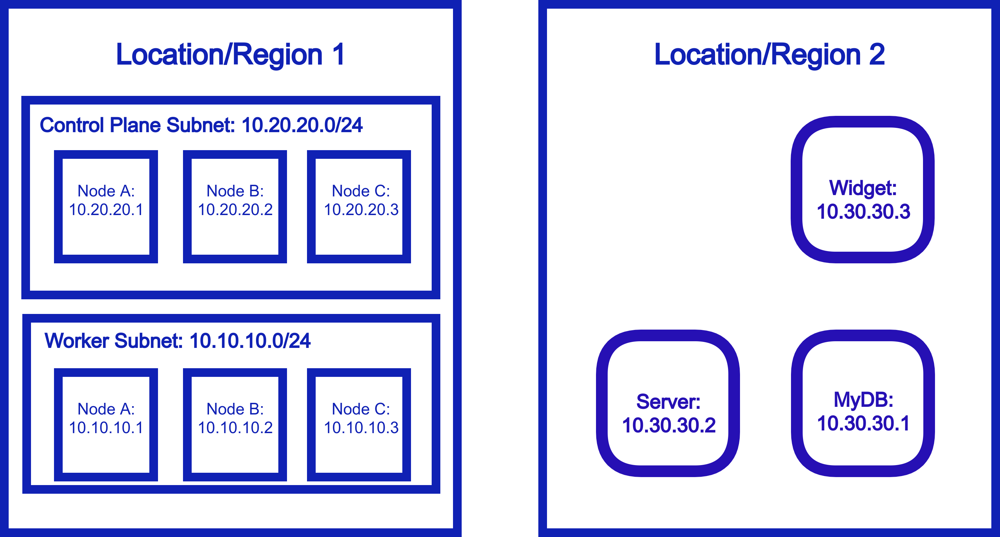{kind=link}
Solution with Netmaker¶
Netmaker has two approaches to this. The first is to simply “mesh in” the other resources, effectively making them a part of the cluster network.
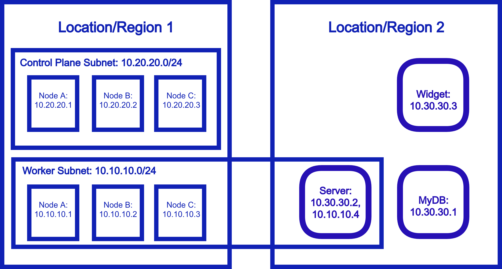{kind=link}
Alternatively, a device in any given location can act as a “gateway” into that location’s private network, like this:
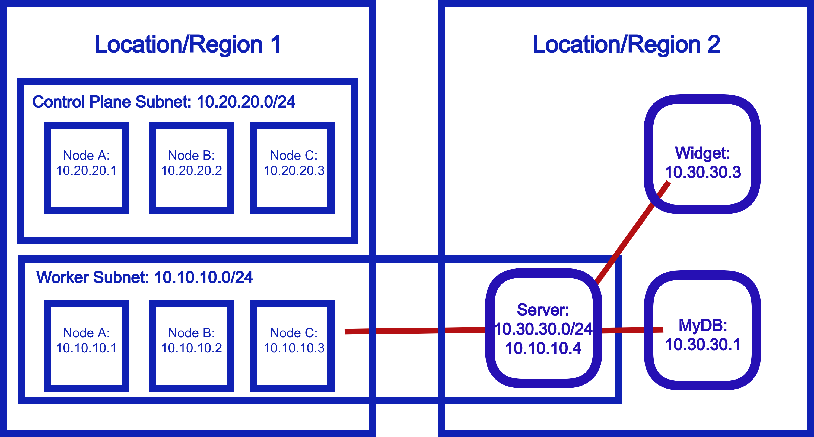{kind=link}
Either pattern can be used to allow secure connections from your cluster to external resources.
Remote Access (inbound)¶
Problem¶
This is the inverse of the above scenario. Resources outside of the cluster need to access the pod/service/node network of Kubernetes securely.
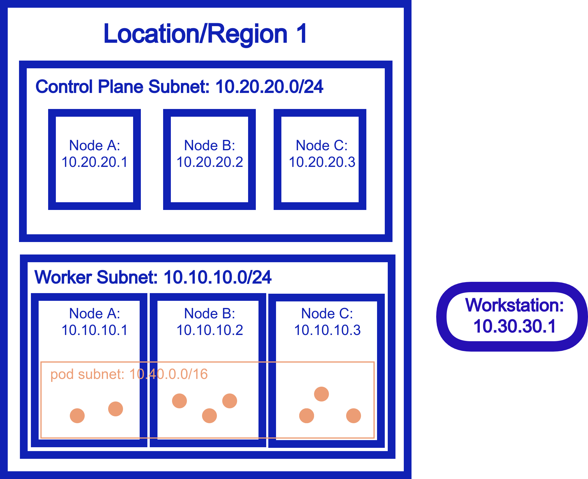{kind=link}
Solution with Netmaker¶
Similarly to the outbound scenario, we can set a single node in our cluster as an inbound gateway, and then external resources are granted access to the cluster network via the gateway.
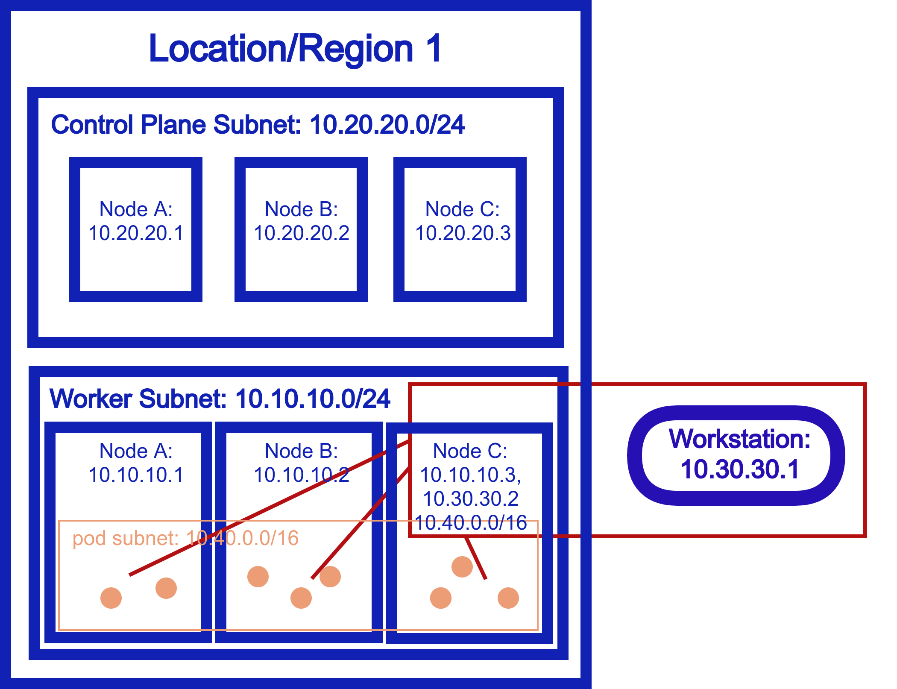{kind=link}
Cross-Cluster Networking¶
Problem¶
In some scenarios, you have clusters that must connect with each other. A single, wide cluster is not an option, and clusters in different environments need to be able to directly access the pod/service network of each other.
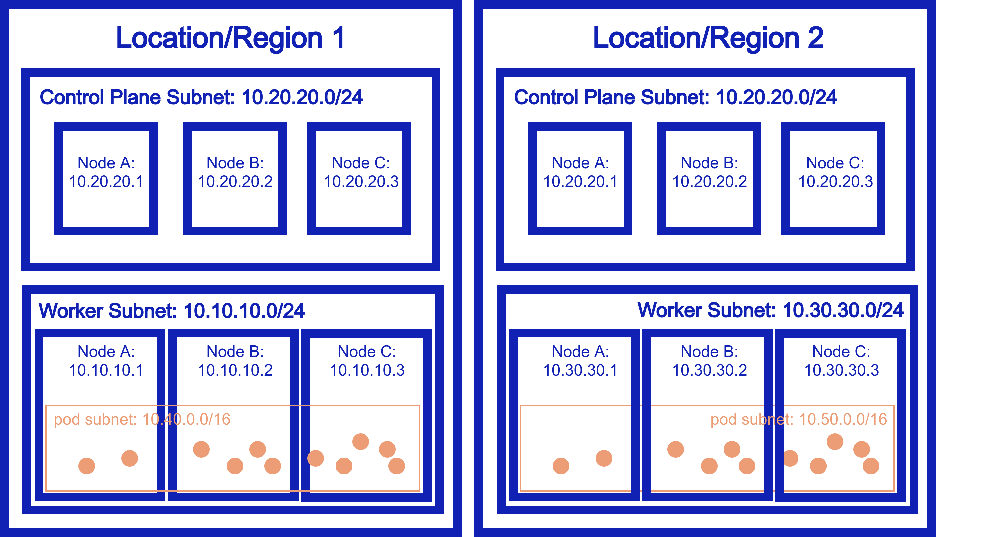{kind=link}
Solution with Netmaker¶
One node on each cluster is added to a Netmaker network. Each node acts as an inbound gateway to the respective cluster network.
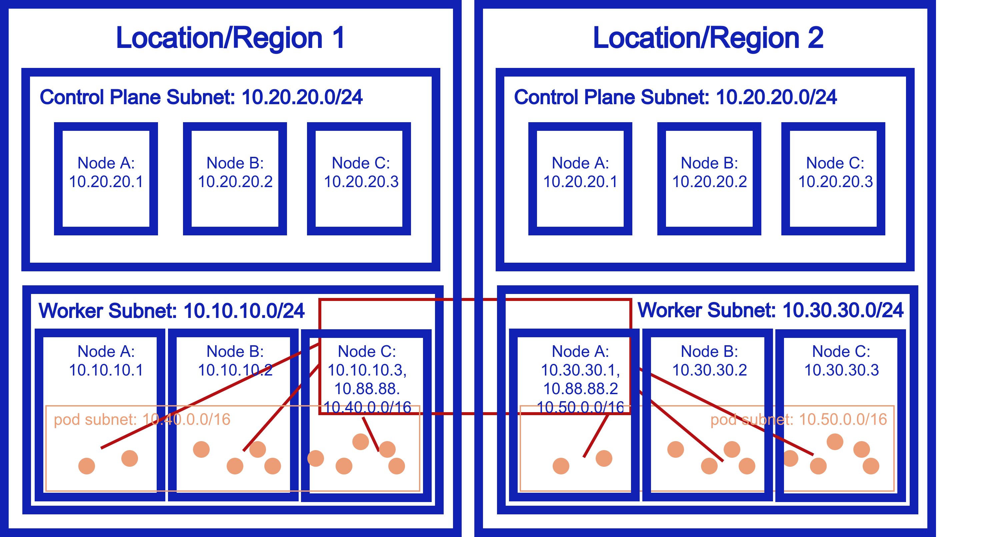{kind=link}
In this way, the pod/service network of Cluster A becomes available from Cluster B, and vice versa.
Current Limitation: Clusters must have non-overlapping subnets. A future version of Netmaker will resolve this constraint.